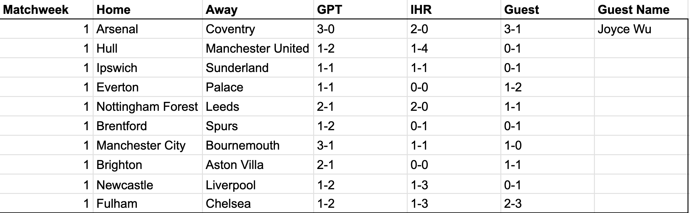
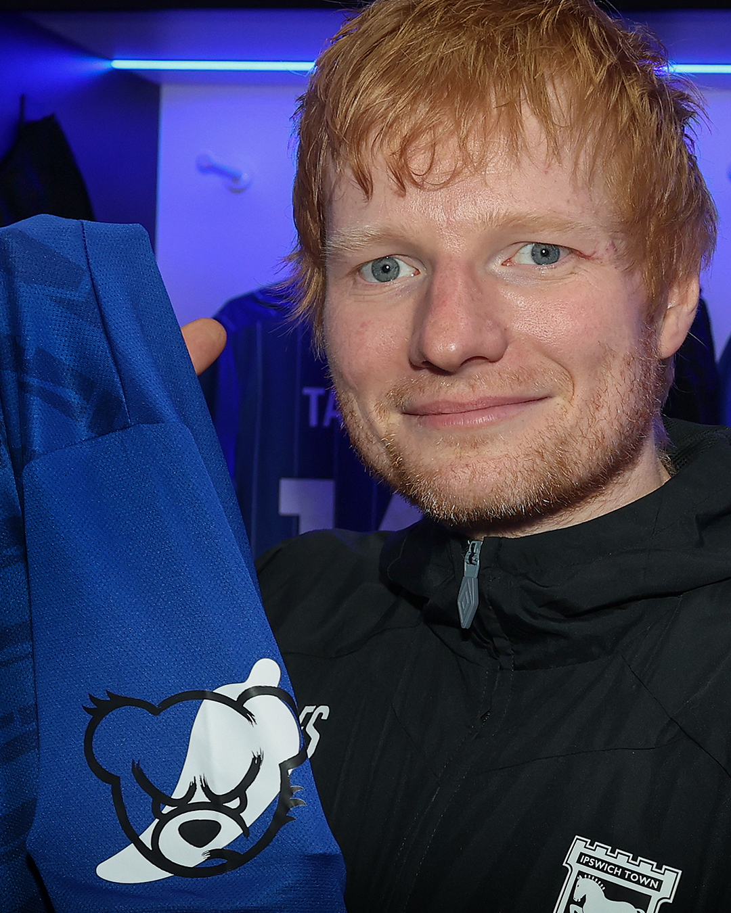

Here goes the first batch of predictions for the opening weekend of the 2026/27 season.
When I made some match predictions in one of my World Cup writeups, my friend Mary (who had shown her siblings, who had been looking to sports bet) forwarded the very fair feedback that my predictions weren’t very good. So I wanted to caveat this series the way I see Mark Lawrenson ended his series “If I honestly thought I could accurately predict the results of football matches, I wouldn't be here, freezing my backside off. I would be in Barbados”.
This week’s guest is my roommate best friend Joyce. Despite being blessed with Shaqiri-sized calves, Joyce never made use of them on the football pitch until two seasons ago when we started playing in a Monday 6-a-side league next to our apartment. One of her earliest memories of watching the sport, like many in our generation, was seeing Neymar score at the World Cup. For Joyce though, that was the 2026 World Cup, where we watched from the stands at “New York New Jersey Stadium” as he slotted home a useless consolation penalty against Norway.

The consensus picks were victories for Arsenal, Manchester United, Spurs, Liverpool, and Chelsea – basically 5 of the “big 6”. We all expect Arsenal to kick us off today with a comfortable win, though Joyce is calling for Coventry to score the first goal of the season. Consider it at least a partial “emotional hedge” for my call for Manchester City to draw with Bournemouth, though even Joyce noted down that she expects City to “barely scrape by”. Our rec soccer team this summer had been christened Pep Talks FC in tribute to Guardiola’s departure and I fear we’re about to find out exactly why he has earned so much praise over the next few games.
IHR and GPT agreed on calls for Forest to beat Leeds as well as draws for Ipswich/Sunderland and Everton/Palace. Almost went with Joyce on picking the Sunderland win, but I might be partially biased from having picked up a discounted $34.99 Ipswich Away kit from Classic Football Shirts that got delivered while writing this up. The kit features their Running Towards Adversity motto (there's a joke to be made but I can't quite figure it out) on the inside collar along with three stars for the First Division Title win (‘62), FA Cup Win (‘78), UEFA Cup Win (‘81’) – but the real highlight is the Tingly Ted hot sauce logo on the sleeve, a logo that I had to google “bear jalapeno ipswich” to find and discover that it was made by club minority shareholder Ed Sheeran.

IHR and JWU both have a Brighton/Villa draw. Villa seem to be losing key players by the minute (Rogers, Konsa, Tielemans, Digne) so maybe GPT is astutely penciling in another few exits by Sunday lunch.